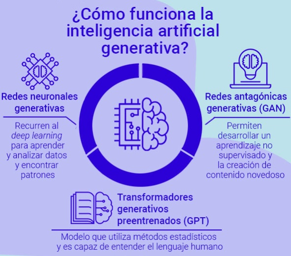
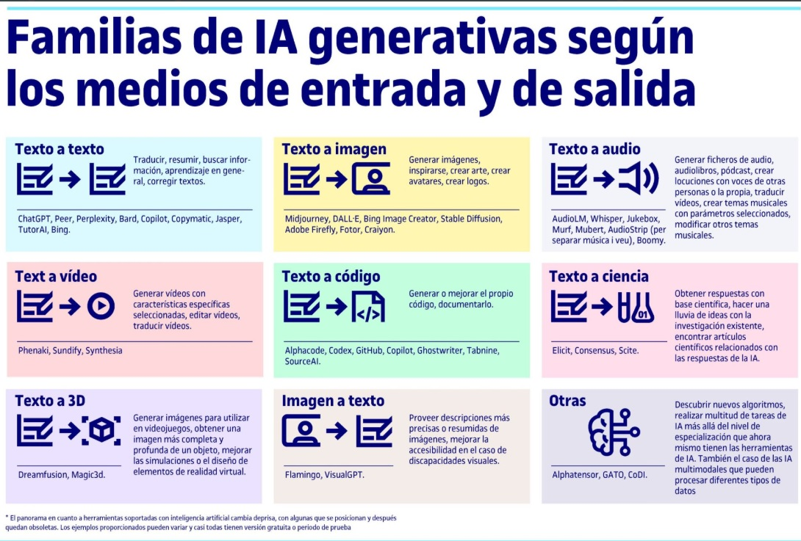

La inteligencia artificial (IA) ha demostrado su potencial paratransformar numerosos campos, y la educación no es una excepción. En la era digital actual, la IA ha emergido como una herramienta poderosa que está revolucionando la forma en que se enseña y se aprende. En este artículo, exploraremos el impacto de la inteligencia artificial en la educación y cómo está transformando el panorama educativo en todos los niveles. Desde la personalización del aprendizaje hasta la mejora de la retroalimentación y el desarrollo de recursos interactivos, examinaremos cómo la IA está cambiando la forma en que adquirimos conocimientos y habilidades.
El aprendizaje profundo (deep learning) es una técnica avanzada de aprendizaje automático que utiliza algoritmos de redes neuronales profundas para analizar grandes cantidades de datos y extraer patrones y características .
En el contexto educativo, el aprendizaje profundo se utiliza para una variedad de aplicaciones, algunas de las cuales son el reconocimiento de voz y texto, la identificación de patrones de aprendizaje, la evaluación asistida y la detección de plagio, tal como se ha comentado en la introducción. Entones, vemos que el aprendizaje profundo se utiliza para desarrollar sistemas de reconocimiento de voz y texto, lo que puede ser útil en la creación de tecnología educativa como chatbots para ayudar al alumnado a resolver sus dudas, programas de reconocimiento de escritura para corregir automáticamente la ortografía y la gramática, y sistemas de transcripción de conferencias para proporcionar notas detalladas a los estudiantes. También se utiliza para identificar patrones de aprendizaje a partir de datos de los estudiantes, lo que puede ayudar al profesorado a diseñar mejores planes de estudio personalizados para sus estudiantes. Por ejemplo, se pueden utilizar algoritmos de aprendizaje profundo para analizar el comportamiento de los estudiantes en un curso en línea y para identificar los patrones que indican si un estudiante está en riesgo de abandonar el curso.
Por otra parte, la inteligencia artificial generativa es un campo de la inteligencia artificial que se enfoca en crear sistemas que puedan generar nuevos contenidos, como imágenes, música, texto y otros tipos de datos.
Esta área de IA es la que realmente está revolucionando todos los campos, ya que la IA aprende y crea nuevas ideas y productos a partir de los patrones presentes en los datos de entrenamiento y genera nuevos datos a partir de estos patrones, capacidad que anteriormente solo la atribuíamos a los seres humanos.
Y es este tipo de IA la que verdaderamente está cambiando la forma en que entendemos y en que interactuamos a través de Internet.
Como aplicaciones educativas de la inteligencia artificial generativa podemos decir que pueden ayudar al alumnado a aprender al mismo tiempo que ayudar al profesorado a enseñar de nuevas maneras .
También permiten la creación de chatbots educativos que pueden ser utilizados para responder a preguntas de los estudiantes y proporcionar retroalimentación personalizada, que pueden ser entrenados para responder preguntas comunes y para proporcionar ayuda y recursos adicionales.
Asimismo, la IA generativa puede ser utilizada para ayudar al alumnado a escribir ensayos y otros textos, ayudando a mejorar su gramática, ortografía y estilo de escritura, y a generar ideas para sus ensayos.
También puede ser utilizada para adaptar el aprendizaje a las necesidades y habilidades de cada estudiante, analizando el rendimiento de cada estudiante, y proporcionar recomendaciones y recursos personalizados para ayudarlos a mejorar.
Por otra parte, la IA generativa puede ser utilizada para crear juegos educativos personalizados que ayuden a los estudiantes a aprender de manera más efectiva y proporcionando retroalimentación inmediata
Por último, Chat GPT , que es un modelo de lenguaje de IA generativa, puede ser utilizado en una variedad de tareas de procesamiento de lenguaje natural, como chatbots, asistentes virtuales, generación de texto, traducción automática, análisis de sentimientos, entre muchas más aplicaciones aún inexploradas que están cambiando las formas de enseñar y aprender, ya que Chat GPT puede ser utilizado por el profesorado para diseñar actividades de enseñanza más efectivas y adaptativas para los estudiantes, y en cada área, existen y van apareciendo diariamente nuevas aplicaciones de esta tecnología.